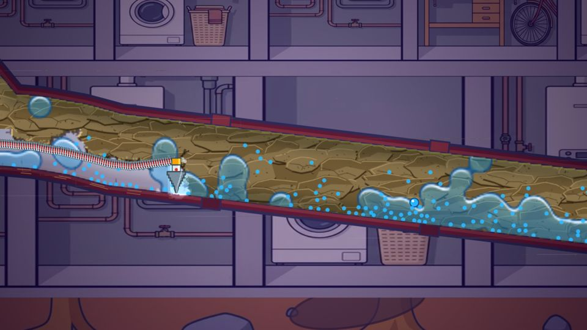
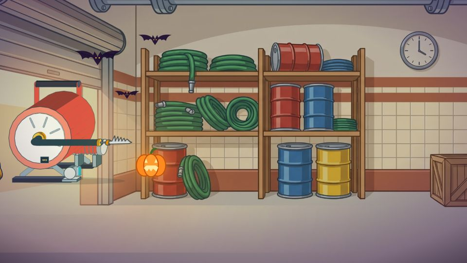
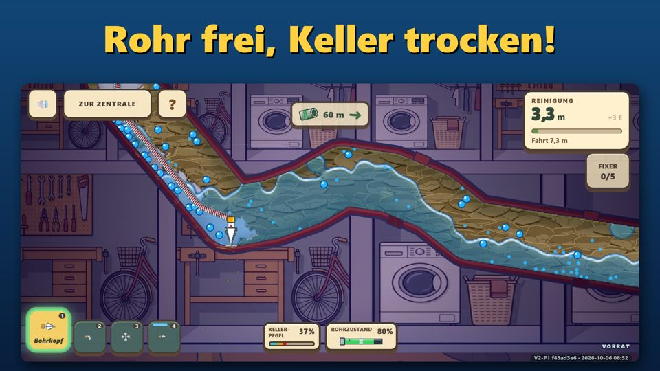
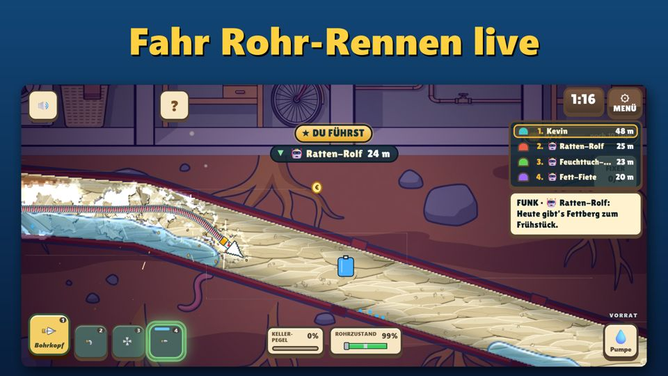
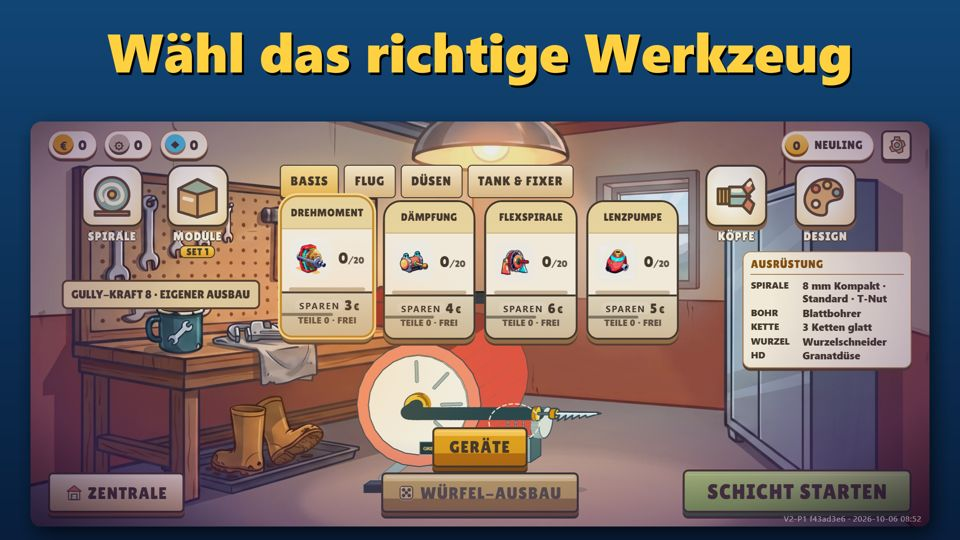
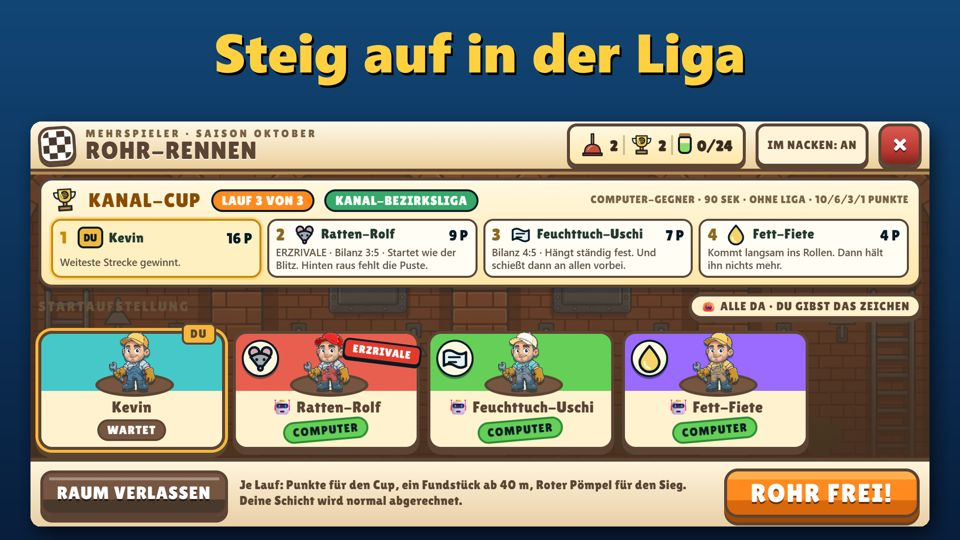
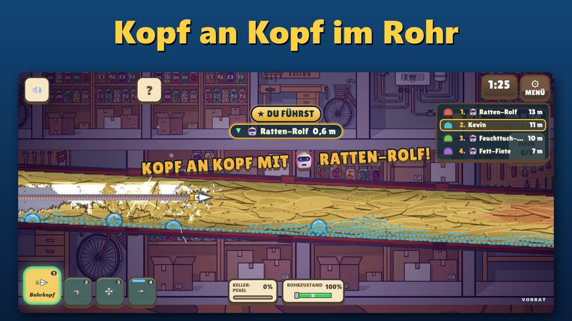
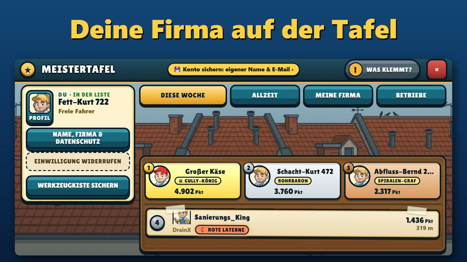

Ein echter Rohrreiniger baut sein Spiel
Die DrainX GmbH aus Hamburg reinigt Rohre und Kanäle für ihre Kunden. Jetzt bringt sie ihren Alltag aufs Handy: Gully Gustav – Rohrreinigung. Kostenlos spielbar, ohne Werbung, für Android und iPhone.
Fakten auf einen Blick
- Titel
- Gully Gustav – Rohrreinigung
- Genre
- Arcade- und Fahrsimulation im Abwasserrohr, mit Mehrspieler-Rennen
- Plattformen
- Android (Google Play, ab Android 7.0) und iPhone (App Store, ab iOS 15). Querformat.
- Start
- Geplant für Donnerstag, 29. Oktober 2026, in Deutschland, Österreich und der Schweiz
- Preis
- Kostenlos spielbar, ohne Werbung. Optionale In-App-Käufe: Diamanten-Pakete (nur Kosmetik und Komfort, kein Vorteil in Rennen und Liga)
- Sprache
- Deutsch
- Mehrspieler
- Live-Rennen mit bis zu acht Fahrern, Liga, Meistertafel für Betriebe. Online-Teile sind freiwillig, Schichten laufen auch offline.
- Zum Start
- Halloween-Event bis 9. November 2026
- Entwickler und Herausgeber
- DrainX GmbH, Großlohering 64a, 22143 Hamburg
- Bundle-ID
de.drainx.gullygustav- Pressekontakt
- support@gullygustav.de
Die Geschichte
Verstopfte Rohre, steigendes Wasser, Wurzeln im Kanal: Für die DrainX GmbH aus Hamburg ist das Alltag. Das Unternehmen ist ein echter Rohrreinigungsbetrieb – und hat sich entschieden, daraus ein Spiel zu machen.
Im Spiel fährst du als Rohrreiniger Gustav durchs Abwasserrohr. Fett, Feuchttücher, Haare, Kalk und Wurzeln stehen im Weg, und hinter jeder Verstopfung staut sich das Wasser. Wer das falsche Werkzeug wählt, bleibt stecken – genau wie im echten Einsatz.
Jede Mechanik im Spiel hat ein Vorbild aus dem Arbeitsalltag. Nur der Geruch fehlt.
Hinter dem Projekt steht auch ein Anliegen: Das Handwerk sucht Nachwuchs, und kaum jemand weiß, was in einem Rohrreinigungsbetrieb wirklich passiert. Gully Gustav zeigt es – spielerisch, mit Humor und mit Respekt vor der Arbeit.
Zitate: Zitate der Geschäftsführung werden zum Start ergänzt und vorher freigegeben. Interviewwünsche bitte über den Pressekontakt.
Das Spiel
Echtes Handwerk
Jeder Kopf taugt für etwas anderes: Fräse, Kette, Hochdruck, Wurzelschneider. Wer das Richtige wählt, kommt weiter.
Das Wasser kommt mit
Löst du eine Verstopfung, rauscht das Wasser nach. Brocken treiben weiter und bauen die nächste Blockade.
Rohr-Rennen und Liga
Live gegen bis zu sieben andere: Raum aufmachen, Freunde per Link einladen oder offenen Räumen beitreten. Ohne Mitspieler tritt die Kanalbande an. Siege bringen Ligapunkte von Bronze bis Meister.
Werkstatt und Ausbau
Euro und Schrott verdienen, den Wagen mit Modulen ausrüsten, Köpfe mit Teilen aus Feierabend-Kisten verbessern.
Deine Firma auf der Meistertafel
Betrieb eintragen, Kolleginnen und Kollegen einladen, gemeinsam die Tafel hochklettern. Ganze Firmen treten gegeneinander an.
Die Legende im Rohr
In vier Revieren wartet das Silberkroko. Seine Bewegungen lesen, ausweichen, die Trophäe verdienen.
Echte Einsätze
Verschiedene Einsatzorte mit eigenen Aufträgen, Materialien und Zielen. Jede Schicht ist anders.
Auch ohne Netz
Schichten laufen offline. Rennen, Liga und Meistertafel brauchen Internet und sind freiwillig.
Kostenlos, ohne Werbung
Gully Gustav ist kostenlos spielbar und zeigt keine Werbung.
Spielbilder
Alle Bilder in 1920 × 1080 Pixeln, aufgenommen im Spiel. Bildnachweis: Gully Gustav / DrainX GmbH. Die Bilder 1 bis 6 tragen die Überschriften der Store-Seiten, die Bilder 7 und 8 sind ohne Text.
















Logos und Symbol


Bitte Logo und Symbol unverändert und mit etwas Freiraum verwenden. Gully Gustav, die Figur, Grafiken, Musik und Programmcode sind urheberrechtlich geschützt (Näheres im Impressum). Für die Berichterstattung über das Spiel dürfen die Bilder mit Bildnachweis genutzt werden; für andere Zwecke bitte beim Pressekontakt anfragen.
Pressekontakt
DrainX GmbH
Großlohering 64a · 22143 Hamburg · Deutschland
E-Mail: support@gullygustav.de
Für Fragen zum Projekt, Interviewwünsche, Testzugänge und weiteres Bildmaterial. Spielerfragen beantwortet die Hilfe-Seite.